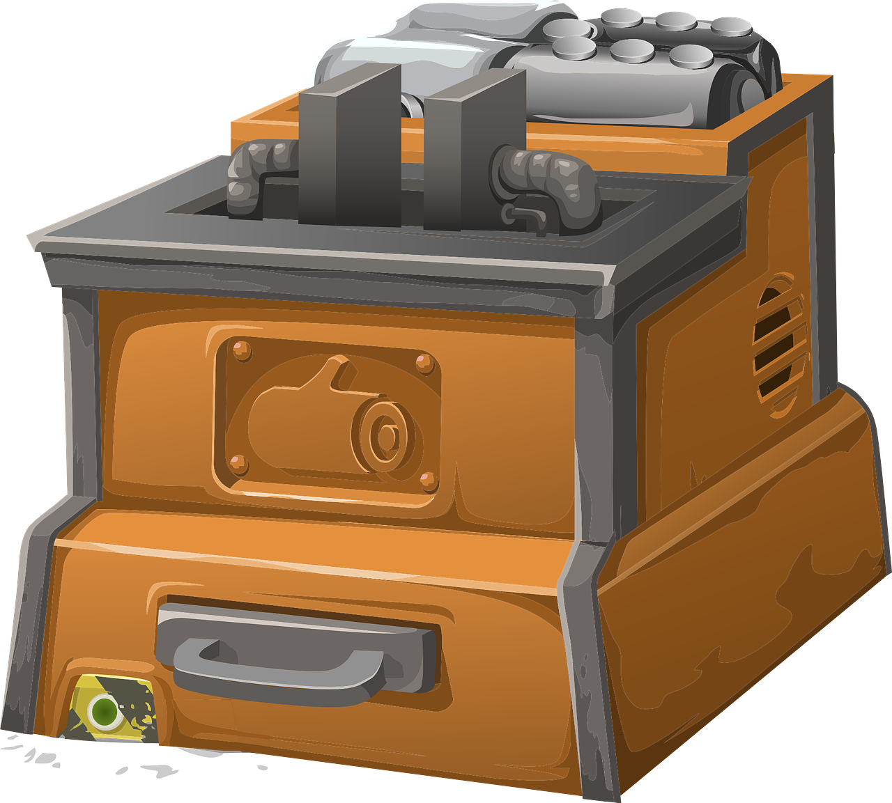

Product Details
Constant Voltage Transformers (CVTs)
Certain critical equipment require Solid State Voltage stabilizers with galvanic isolation between mains input and the equipment. A special type of stabilizer, called the Constant Voltage Transformer is used for such applications.
Frequency Converters
A frequency converter/changer is an electronic device that converts alternating current (AC) of one frequency to an alternating current of another frequency. The device may also change the voltage, if required.
Industrial Battery Chargers
A battery charger is a device used to put energy into a secondary cell or rechargeable battery by forcing an electric current through it. The charging protocol depends on the size and type of the battery being charged.
Power Inverters
A power inverter is an electronic device or circuitry that changes direct current (DC) to alternating current (AC). The input voltage, output voltage, frequency & overall power handling all depend on the design of the specific device or circuitry.
Servo Stabilizers
Servo Control Voltage Stabilizers are highly efficient voltage regulators that work equally well on any kind of load. It consists of a detector, a switching unit, a motorized auto-transformer & a cut-off circuit.